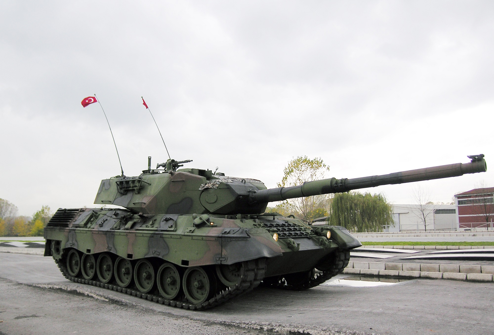

Leopard I
Informacije o vozilu:
| Specifikacija | Detalji |
|---|---|
| Naziv | Kampfpanzer Leopard I |
| Tip | Srednji tenk (42,2 tone) |
| Uveden u uporabu | 1956. godine |
| Naoružanje | L7A3 L/52 105mm top i 2x 7,62 mm MG3A1 strojnica |
| Oklop | 150 mm maksimalno |
| Brzina | 65 km/h |
| Posada | 4 člana |
Razvoj Leoparda započeo je 1950-ih kao zajednički projekt njemačke i francuske, ali suradnja je prekinuta. Razvoj je nastavilo njemačko ministarstvo obrane, a serijska proizvodnja je počela 1965. godine. Ukupno je izgrađeno 6.485 Leoparda 1, od kojih su 4.744 bili tenkovi, a ostalih 1.741 su bila višenamjenska oklopna vozila i protuzrakoplovni (PZO) topovi. Do 1990., Leopard 1 bio je u većini vojska koje su ga rabile bio postupno povlačen u rezervu. U njemačkoj vojsci tenkovi Leopard 1 su povučeni 2003., dok su ostala vozila koja su napravljena na temelju njega još uvijek u uporabi. Na mjestu glavnog borbenog tenka njemačke vojske zamijenio ga je suvremeniji, Leopard 2.
Kanadski C2A1 Leopard I na Bliskom istoku